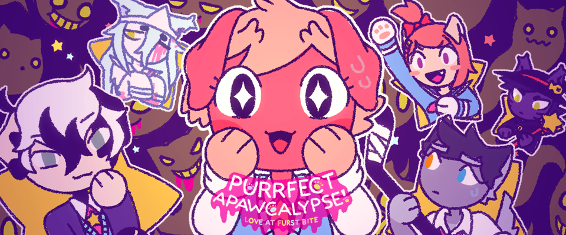

Purrfect Apawcalypse: Love at Furst Bite
Olive, o vira-lata, encontra-se preso na Hachiko High School durante o apocalipse! Demônios têm massacrado seus colegas de classe e estão certos de que também encontrarão seu fim prematuro... O que significa que só restam muitos cachorros para passar seus últimos momentos! Junte-se a Olive em sua terrível busca por alguém especial! Será Brownie, a corgi que adora lanches, Sparky, o husky esportivo, ou Patches, o leitor dálmata? Está tudo nas tuas mãos!
⬇ Download